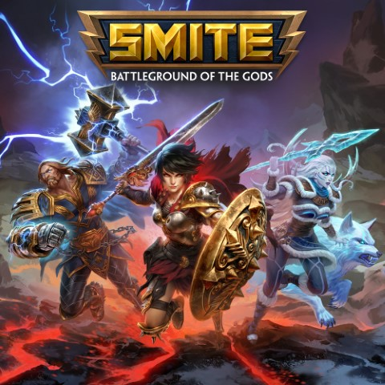

Watch anime is one of my favorite activities to do, I really enjoy to see
a serie where anything can happen, no matter how impossible it looks, the
characters can fly or they can be super fast, and the animation it's just
amazing, that's why I like this hobbie so much.
I had always been a sports lover, since I was a child my father teache me
how to play soccer, he wanted me to be a goalkeeper, then when I was on
high school my classmates and I started to play basketball and volleyball,
recently, on university I started to play ping pong, so I consider myself
as a big sports fan.

Since I was a child I had a big interest in videogames, therefore my parents
bought my first videogames console, it was an Xbox, and I played all kind of
videogames like Crash Bandicoot, Mortal Kombat, Ninja Gaiden and more, then
I started to play on PC, videogames like League of Legends, Smite, Aion, Tera
and a lot of videosgames more.